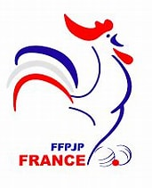

La pétanque, qui signifie "pieds tanqués", est un sport de précision pour petits et grands.


Le club de la Boule Boussaquine est un des plus grand club de pétanque en Creuse, le deuxième derrière Guéret, comptant plus d'une centaine de licenciés de tout âge. Créé en 1970, il est situé dans la ville de Boussac et a déjà vu passer différents présidents. Le club continue de se dévélopper et acceuille de très bons joueurs, cela est visible grace aux brillants résultats des joueurs.
Lorsqu'on pense pétanque, on pense souvent vétérans or la pétanque est un sport pour tous ! Vétérans, jeunes, féminines... Tout le monde a le droit à son équipe et à ses championnats !
L'école de pétanque de Boussac est une des principales écoles de Creuse. Les entrainements se déroulent le vendredi soir de 17h30 à 19h au boulodrome de Boussac en période scolaire pour chaque jeune souhaitant lancer quelques boules. Ces entrainements se font sous la surveillance d'éducateurs formés pour apprendre et entrainer les jeunes. Dans ces débuts, le club comptait ses jeunes sur une main. Au fur et à mesure des années, le nombre de jeunes a augmenté et aujourd'hui l'école en compte une vingtaine.
Pour s'entrainer, le club a besoin d'un boulodrome assez grand pour acceuillir tous ses adhérents. Avant cette année, la centaine de licenciés avait un petit boulodrome avec trois terrains et un plafond relativement bas.
En vu de la croissance du club et notamment l'augmentation du nombre de jeunes, un aggrandissement de ce boulodrome a été réalisé pour permettre la sécurité de tous. Le nouveau boulodrome comporte douze terrains avec un plafond bien plus haut, une buvette et des toilettes complètement refaites.
Ce boulodrome a été inauguré le samedi 6 décembre 2025, en présence d'un bon nombre de licenciés, de divers sponsors du club, du maire de Boussac et des représentants de la mairie de Boussac et une vedette de la pétanque : Christian Fazzino ; multi champion de France, d'Europe et du monde ! Cette cérémonie s'est déroulée dans la bonne humeur : discours, remerciements, buffet, et parties de pétanque ! Pour plus d'informations sur cette star de la pétanque de chez nous (Allier), cliquez sur le lien suivant : https://fr.wikipedia.org/wiki/Christian_FazzinoOn entend souvent cette fameuse phrase dès que l'on parle de pétanque mais en réalité la pétanque est bien plus variée que ça. Certes, les deux grandes catégories sont le tir et le point mais on retrouve bien plus de façon de pointer ou de tirer.
Pour le point, on distingue le point glissé, la demie-portée, le 3/4 et la portée. La façon de pointer dépend, bien sur, du joueur mais aussi notamment du terrain sur lequel on joue (plutôt sableux ou plutôt rocheux).
Pour le tir, il y a également différentes façons de faire : le tir au fer, le tir à l'avantage, la demi-rafle et la rafle. Cela aussi dépend du joueur et du terrain.
Il y a aussi un mélange du tir et du point, très peu connu : la refente. Elle consiste à pointer plus fort que le jeu sur une boule, en tombant proche de celle-ci, pour l'enquiller et prendre sa place.
La pétanque est un sport et comme tous sports, il a ses propres compétitions et championnats.
Nous retrouvons le qualificatif masculin, féminin, vétéran et jeune. Dans chacun d'eux nous retrouvons le qualificatif triplette, doublette et tête-à-tête. De plus, il y a la triplette mixte et la doublette mixte.
Une coupe des clubs adulte et jeune est aussi organisée. Cela est d'abord au niveau départemental et peut évoluer en régional voir même national.
Chaque joueur peut intégrer une équipe pour disputer le championnat départemental des clubs (CDC) à différentes divisions (5 en tout, en Creuse). Ce championnat est open, c'est-à-dire que n'importe qui peut faire partie de l'équipe mais il existe aussi un championnat vétérant et un féminin. Cela fonctionne ainsi : il y a plusieurs poules dans chaque division, toutes les équipes de la poule se rencontrent deux fois (aller-retour) puis les derniers et les premiers des poules s'affrontent lors d'une journée finale pour se maintenir ou évoluer en division supérieure l'année d'après.
Cette année la Boule Boussaquine comptera 4 équipes en championnat régional des clubs (CRC).

Voici deux grands joueurs connus dans le monde de la pétanque : Dylan Rocher et Philippe Suchaud !
Dylan Rocher est un tireur bien connu des français. Depuis tout petit, il joue aux boules et fait des étincelles. Ce gaucher au geste particulier est au club de Fréjus depuis 2019.
Philippe Suchaud, lui, est licencié à Arlanc. Son poste préféré est également tireur. Il a souvent joué en triplette avec Dylan Rocher et Henri Lacroix. Depuis ses 12 ans, il a cette passion pour la pétanque et a déjà remporté de nombreux titres.
| Balise | Rôle |
|---|---|
<body> |
Corps de la page, non affiché |
<head> |
Entête de la page, non affichée |
<h1> |
Titre principal |
<h2> |
Titre moins important |
<p> |
Paragraphe |
<a> |
Hyperlien |
id= |
Attribut du langage html |
href |
Cible du lien |
<img> |
Image |
img src= |
Source de l'image |
alt= |
Texte alternatif à l'image |
<ul> |
Liste non ordonnée d'éléments |
<li> |
Revenir à la ligne |
<title> |
Texte dans l'onglet du navigateur |
<table> |
Tableau |
<td> |
Cellule d'un tableau |
<tr> |
Nouvelle ligne du tableau |